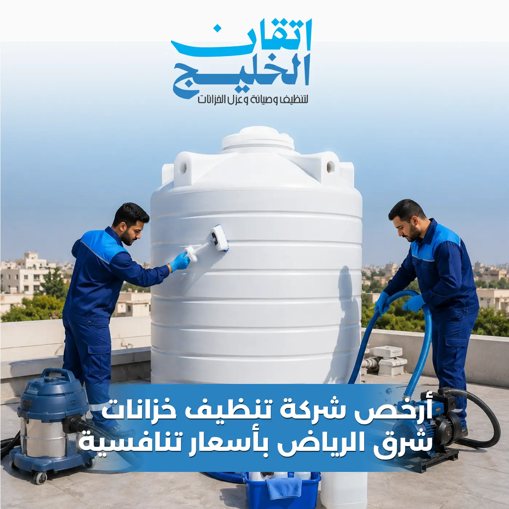

تنظيف خزانات في الرياض
تستهدف خدماتنا تلبية طلبات سكان وأصحاب العقارات في الأحياء والقطاعات الواقعة بمدينة الرياض. إذا كنت تبحث عن خدمة غسيل وتنظيف قريبة وسريعة لخزان مياه المبنى، فإن إتقان الخليج توفر الفرق الفنية المجهزة للتعامل مع الخزانات مختلفة الأحجام.
للاطلاع على تفاصيل التغطية الجغرافية وأحياء المنطقة، يمكنكم زيارة صفحة خدمات إتقان الخليج في الرياض.
